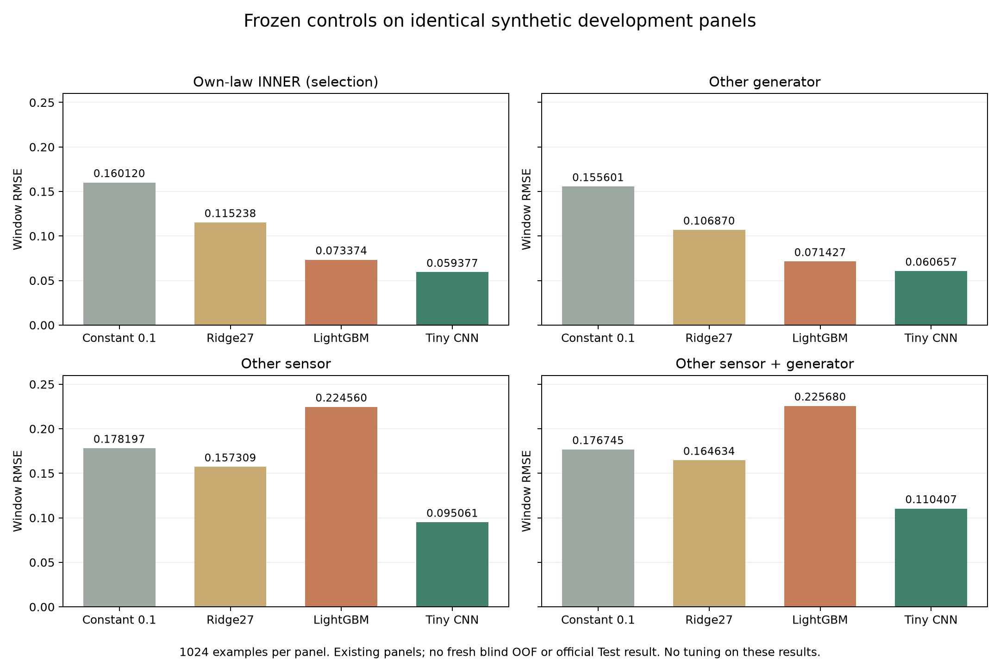

UNDERWATER VESSEL NOISE · 2026-10-26
R7 · 실제 제출 파일 검산과
동일 평가 창에서의 모델 비교
Anil45와 같은 데이터를 썼나
동일한 VTUAD rebuilt v1.3.2를 사용했습니다. 우리는525WAV를 변환했고 R4/R5 참조로119클립, 현재R6에서는94클립 중TRAIN51클립을 사용합니다. 고지문만으로 상대의 실제 학습량·모델·합성법을 알 수는 없습니다.
원천·전처리 비교 · 전체 검산·변경 보고서
1. 이전 제출 경로 검산 — 통과
INNER/Test 예측을 bitwise동일하게 재현했습니다. Zindi 제출Vz5mjZEr에서 내려받은CSV도 로컬 제공파일과 바이트·SHA256이 완전히 일치합니다. 열순서·ID·전처리·물리pooling 검사에서 재현 가능한 오류를 찾지 못했습니다.
실행 감사 · 실제 업로드 파일 검증
2–3. 다른 센서·생성기와 소형 대조군 비교
자체 합성 패널의 개발용 평가입니다. 기존에 본 패널을 사용했으며, 공식 Test RMSE·새 blind검증·5foldOOF가 아닙니다. 결과로 checkpoint나 앙상블을 재선택하지 않았습니다.

모든 CNN5개 전이 결과 · 대조군과R5→R6 변경 근거
0.059377의 의미
기존의 약149만 파라미터R5가 아니라, TRAIN8192/INNER1024에서 학습한 약6.4만 파라미터CNN의epoch31 자체INNER 최소값입니다. 생성분포·입력·원천·구조가 함께 바뀌어 이전0.0908과 수치만 직접 비교할 수 없습니다.
앞선100epoch곡선 · SHA receipt